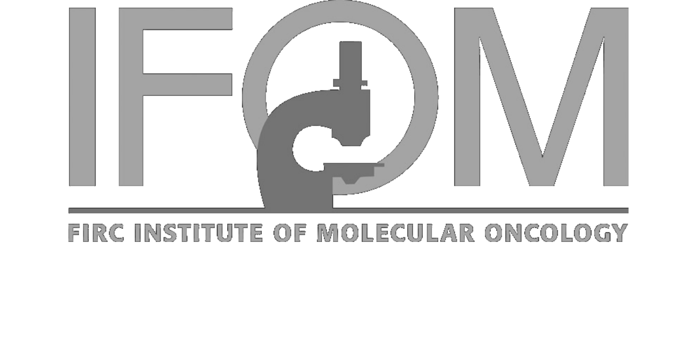

Dear Mechanobiology enthusiast,
after the 2016 and 2017 editions, we are delighted to announce the third occurrence of the Nanoengineering for Mechanobiology symposium.
This year ETH Zürich and CNR will partner with IFOM, The FIRC Institute of Molecular Oncology to organize what we can now call a traditional scientific event. To meet in Camogli, at the beginning of Spring, and share ideas on new and upcoming technologies and applications towards a deeper understanding of the mechanical environment shaping the function of cells and tissues.
Once more, the frame will be the Liguria coast with all the suggestions of the Italian landscape and cuisine. The talks of our invited speakers will be accompanied by several occasions for discussion. Time in which new visions and collaborations can arise.
As for every lasting tradition, we will introduce some novelties. This year the focus of the meeting will include medical insights, to extend our understanding on mechanobiology to its clinical relevance. How do behaviours deciphered at the single cell or tissue level link to pathological conditions? And what is the impact on potential curative strategies?
We wish you an inspiring workshop in Camogli and we are looking forward to meeting you there.
| Sun 25/03 | Mon 26/03 | Tue 27/03 | Wed 28/03 | |
|---|---|---|---|---|
| Morning | --- | Scientific session | IFOM special session | Scientific session |
| Lunch | --- | Lunch & Poster session | Lunch & Poster session | Closure & Lunch |
| Afternoon | Arrival & Welcome cocktail | Scientific session | IFOM special session | --- |
The Nanoengineering for Mechanobiology symposium is organized in Camogli, a nice fishermen village near Genova, with the aim to bring together for three days junior and senior scientists passionate for the field of Mechanobiology. To enhance the interaction among the attendees, all the activities of the conference are organized inside the Hotel Cenobio dei Dogi which is also the accommodation for the participants.
All participants are expected to provide a contribution and present their research, either through an oral talk (if selected) or a poster during the two lunch poster session (Mon and Tue). If you are interested in joining Nanoengineering for Mechanobiology 2018, please follow the registration steps below. Please note that the Symposium is intentionally kept small, to guarantee an informal and collaborative environment. For this reason, only a limited number of places is available and every submission will be evaluated as soon as received.
1. Register to get access to the submission procedure
2. Submit your abstract for the evaluation
In case of admission, you will be instructed to proceed to the payment to complete the process and secure your participation.

Via Nicolò Cuneo, 34
16032 Camogli Genova, Italy
cenobio.it
The Camogli S.Fruttuoso station is 2 minutes walk from the Hotel and directly connected to the national railway network. Find timetables and connections at the Trenitalia website
Have a look at the directions provided by the Hotel or follow any navigation system. The Hotel Cenobio dei Dogi provides free parking for all attendees staying at the Hotel.
The nearest airport is Genova Cristoforo Colombo, which is internationally connected to Paris (Air France), Munich (Lufthansa), London (Ryanair and BA), Barcelona (Flyvalan), Bruxelles (Flyvalan), Amsterdam (KLM), Zurich (Flyvalan) and nationally to the international hub Fiumicino in Rome. The airport is connected via a shuttle service to the Genova Brignole train station (volabus, check the timetable) where a train to Camogli departs every half an hour (timetable and tickets).